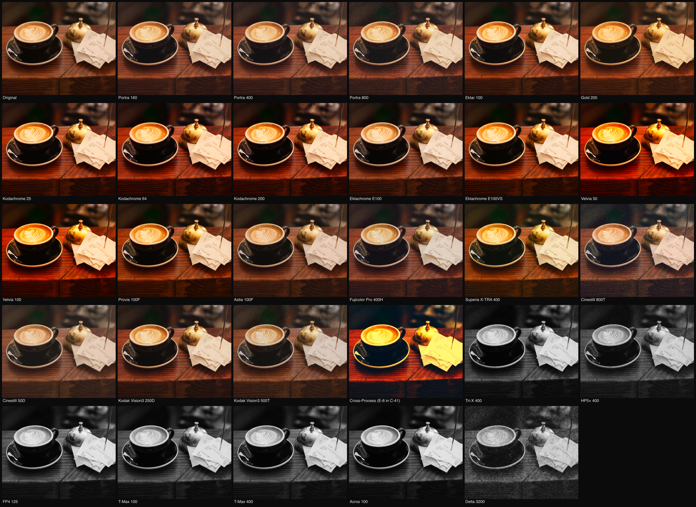
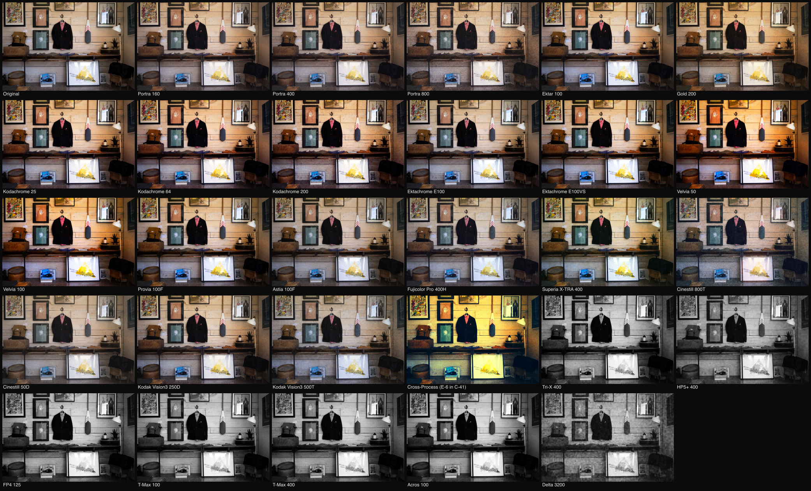
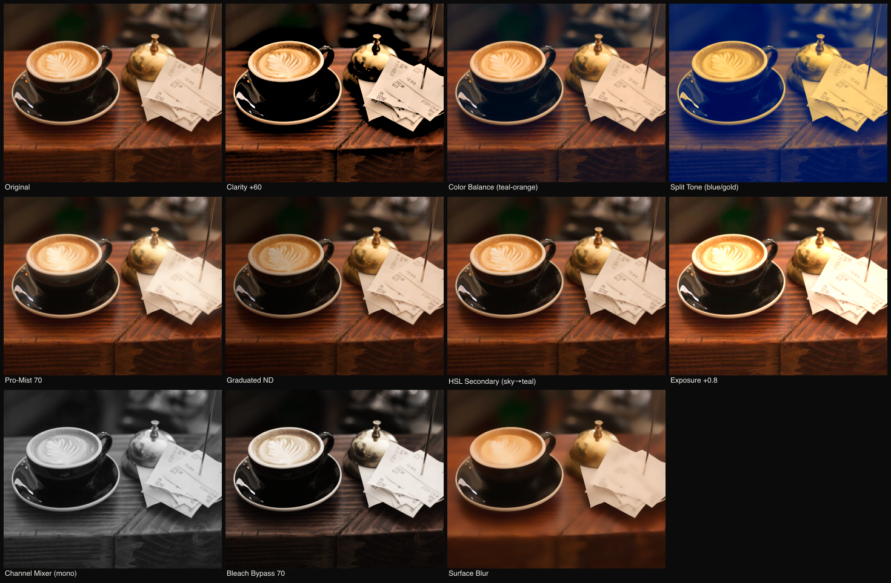
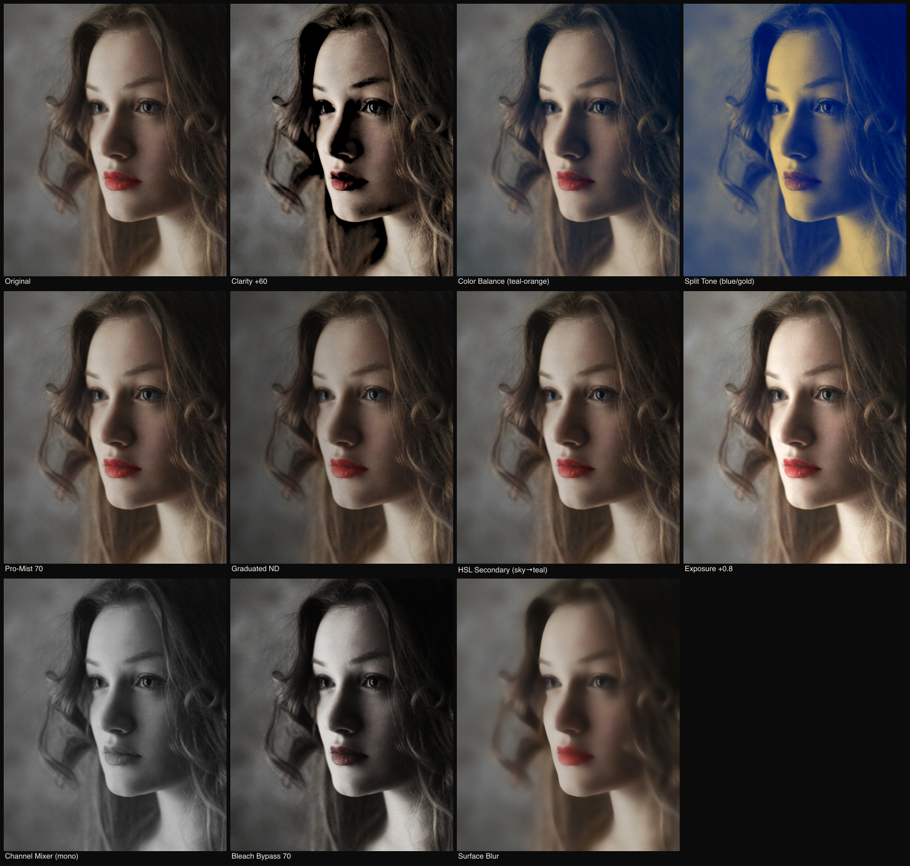
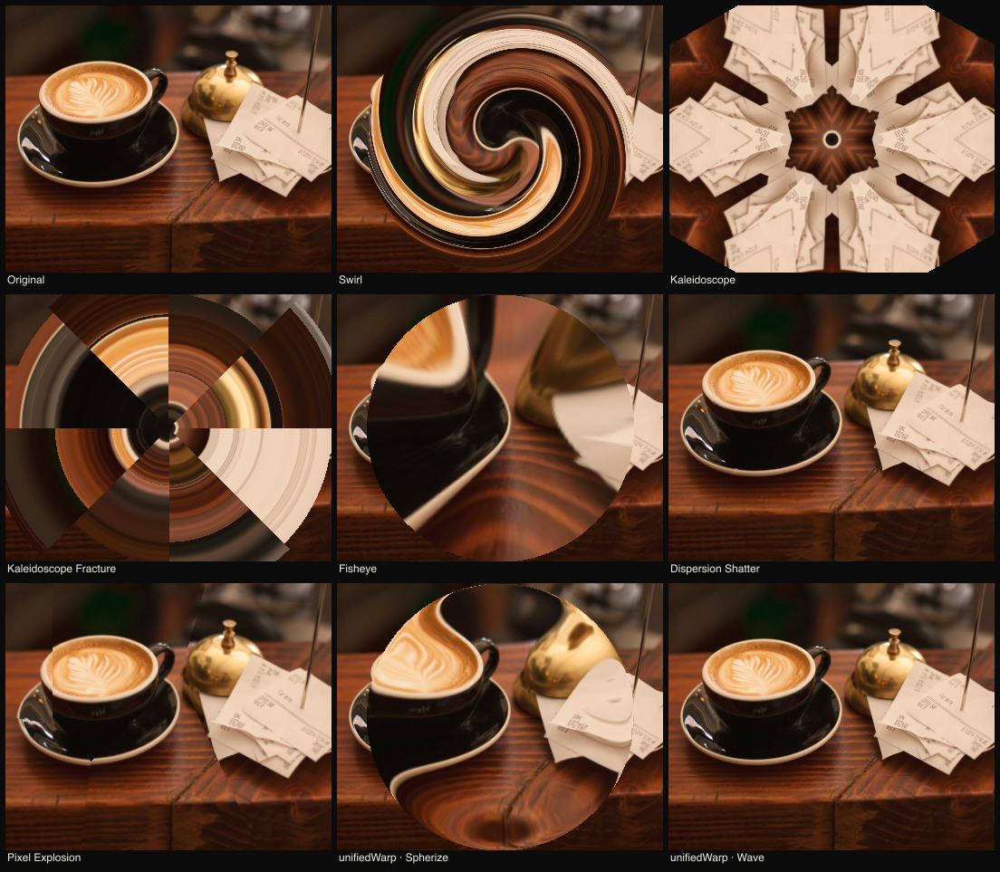
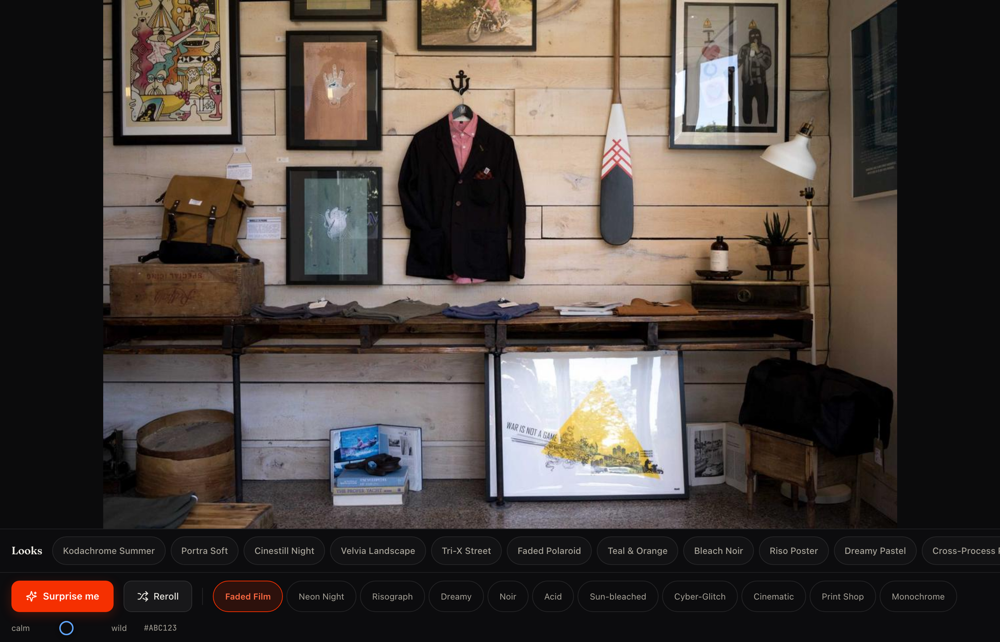
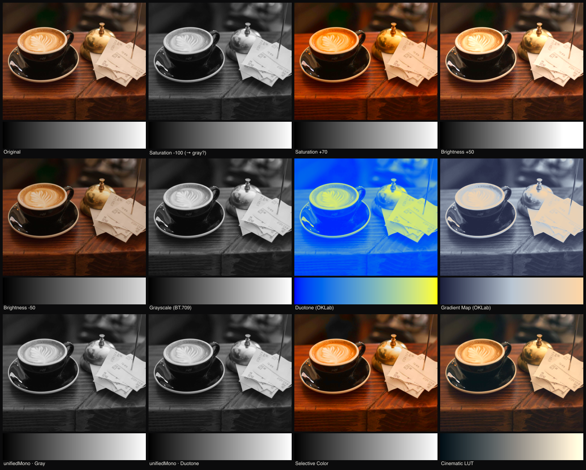

28 stocks, each from documented characteristic curves, channel matrices, RMS-anchored seeded grain, and physically-correct halation — not the old ad-hoc gamma-byte channel math. Pipeline: linear WB/matrix → per-channel curve (toe + shoulder) → saturation → halation → grain.
Validations to look for: Cinestill 800T red halation around highlights; Pro 400H cyan pastel; Kodachrome 64 warm-deep shadows + selective red (not global oversaturation); B&W stocks differing by real channel-mix + grain structure.






